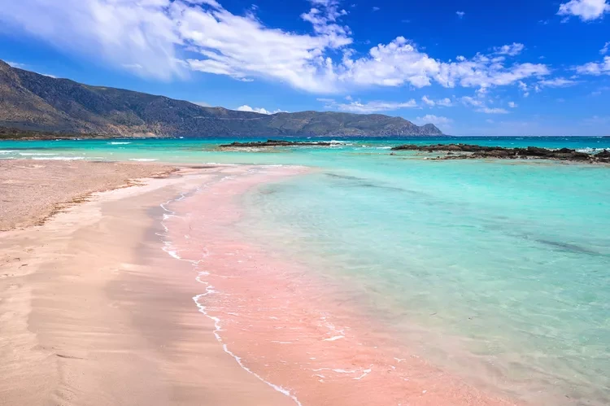
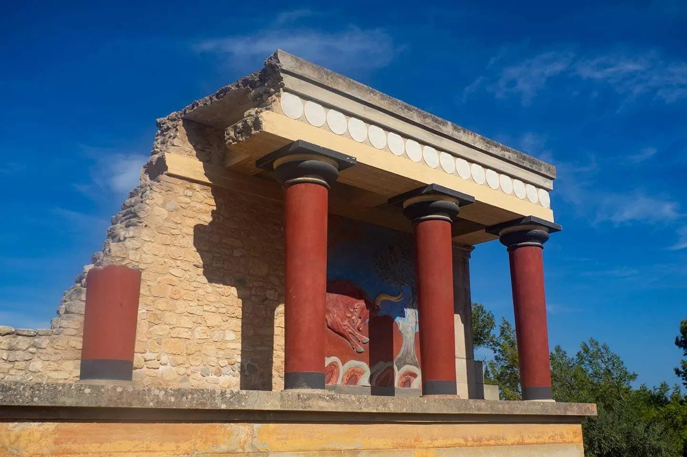
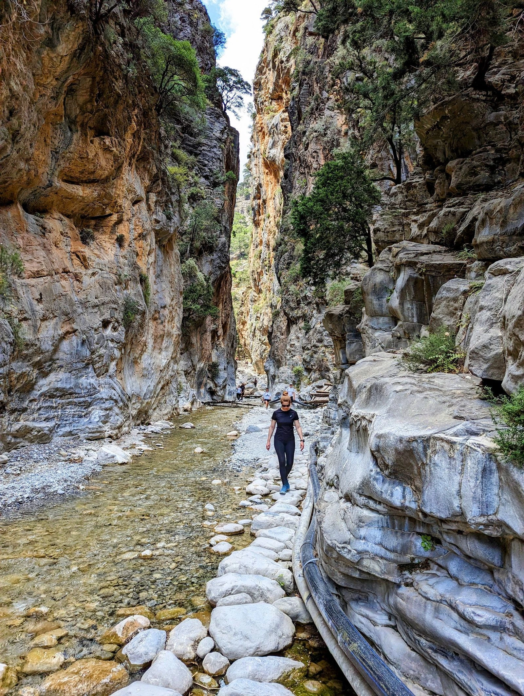
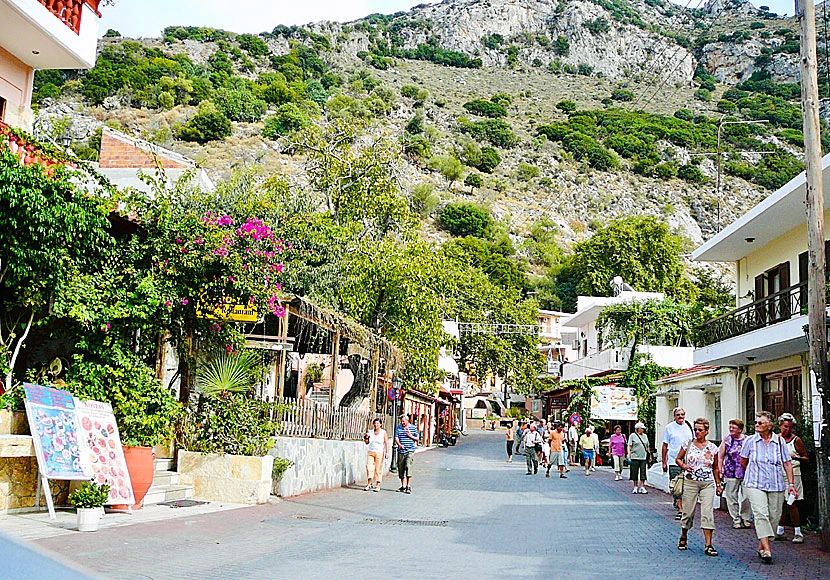
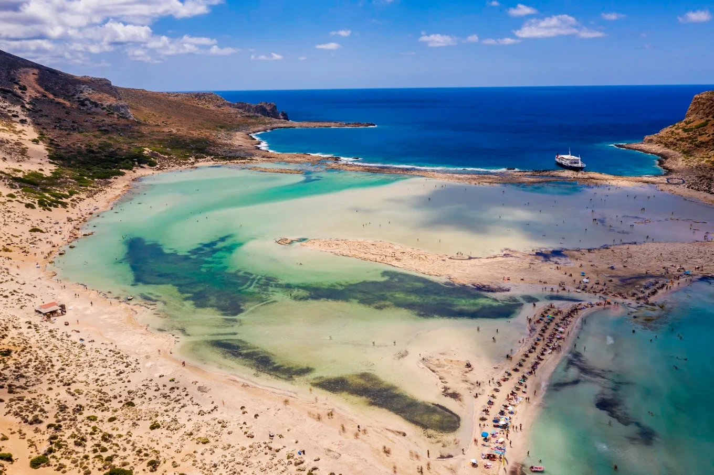
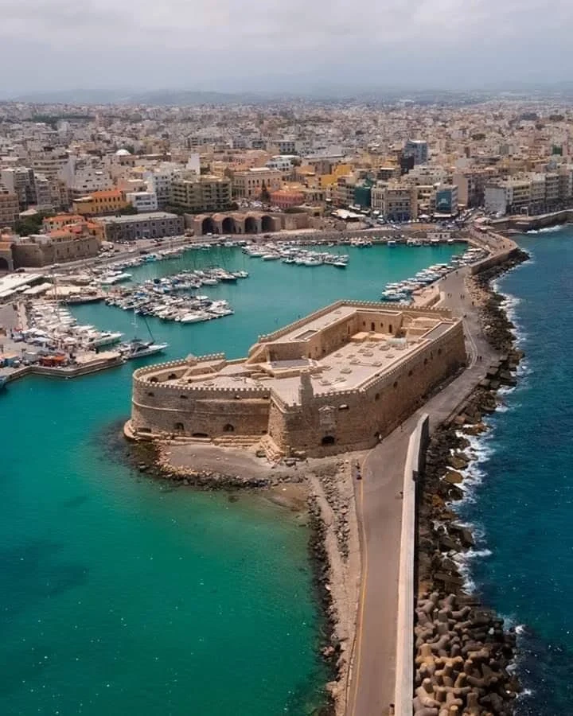
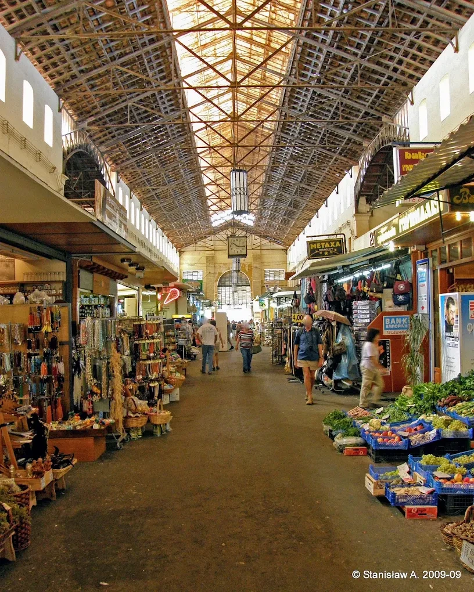
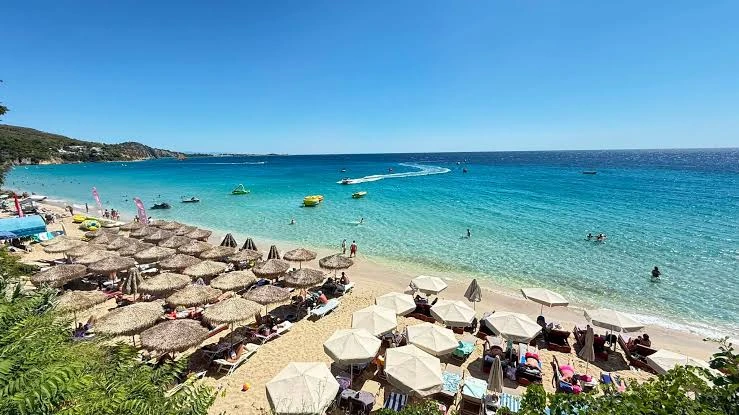

Top Historic Sites and Beaches in Crete
🏖️ Elafonisi Beach (Pink Sand Paradise)

Famous for its unique, shimmering pink coral sands and crystal-clear turquoise waters, Elafonisi is a breathtaking shallow lagoon located on the southwestern tip of Crete. It is widely considered one of the most beautiful beaches in the entire world.
🏛️ The Palace of Knossos

Step directly into Greek mythology at the historical center of the ancient Minoan civilization. Knossos is Greece's largest Bronze Age archaeological site and is legendary for being the home of King Minos and the mythical Minotaur's Labyrinth.
🥾 Samaria Gorge National Park

For outdoor adventurers, the Samaria Gorge offers one of the most dramatic hikes in Europe. Stretching 16 kilometers through majestic limestone cliffs and pine forests, this breathtaking valley path leads hikers straight down to the Libyan Sea.
🥾 Spili Village

Experience the charm of traditional Cretan life in the picturesque village of Spili, known for its well-preserved architecture and vibrant local culture.
🥾 Balos Beach

Discover the stunning beauty of Balos Beach, a hidden gem with crystal-clear waters and golden sands, perfect for a peaceful retreat.
🥾 Heraklion Port

Explore the vibrant port city of Heraklion, a hub of activity and culture with a rich history and modern amenities.
🥾 Old Chania Market

Immerse yourself in the lively atmosphere of the Old Chania Market, where you can find local crafts, fresh produce, and traditional Greek products.
🥾 Makry Gialos Beach

Enjoy the pristine sands and crystal-clear waters of Makry Gialos Beach, a secluded paradise perfect for relaxation and water activities.